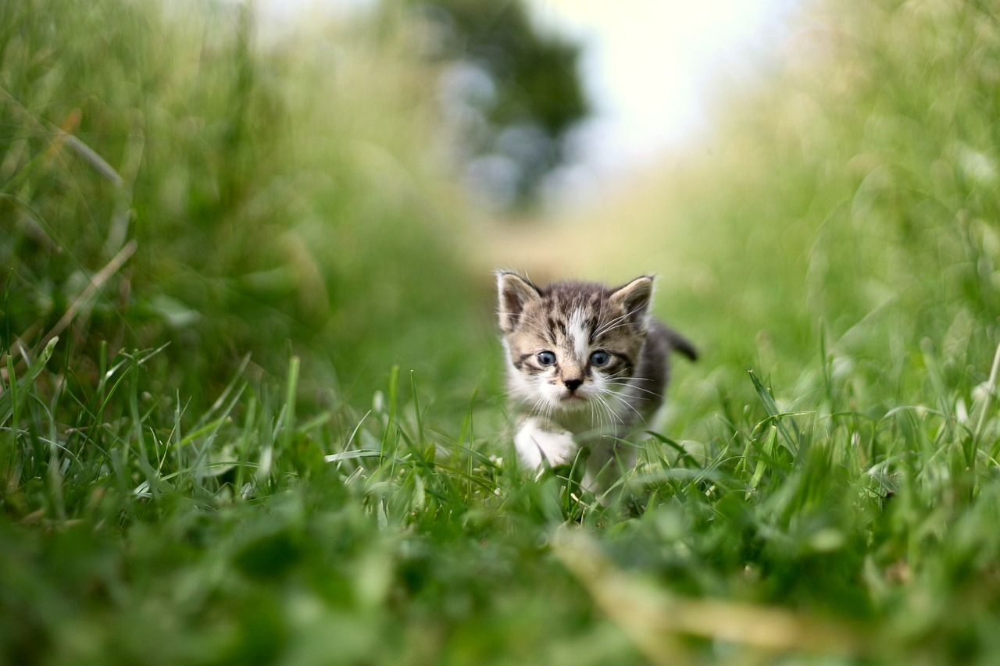
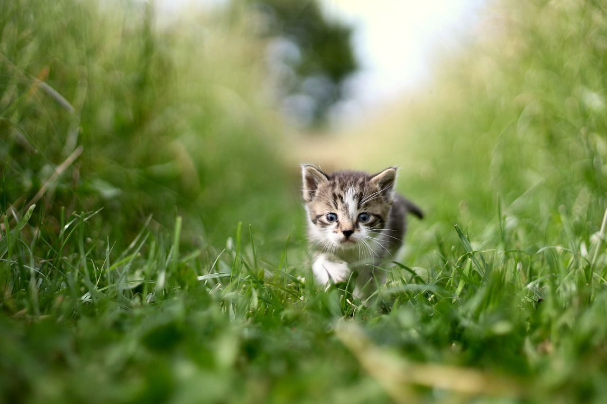

Little Kitty ReTreat was initally a passion project from a little kitty named Itty Bitty. Itty Bitty, a half orange and a half grey cat, knew he always wanted to make his own treats, ones with the right nutrition and quality ingredients. So in between his important nap times, he would go through his owner's fridge and fetch some of the key ingredients. These organic meats from local farmers were far better than the processed cooperate food he used to eat, so alongside his onwner, they decided to start the ultimate kitty treat store. Itty Bitty soon then gained three Meowchalin stars, the highest one can get only one month after opening his store. Now, Itty Bitty is 180 years old, and still acts as fresh as a peach. How come? Obviously because of his genius treats, he managed to invent immortality. Now him and all his friends are able to live as long as they want, and they don't plan on going anywhere, because they must try Itty Bitty's new recipies!


 
